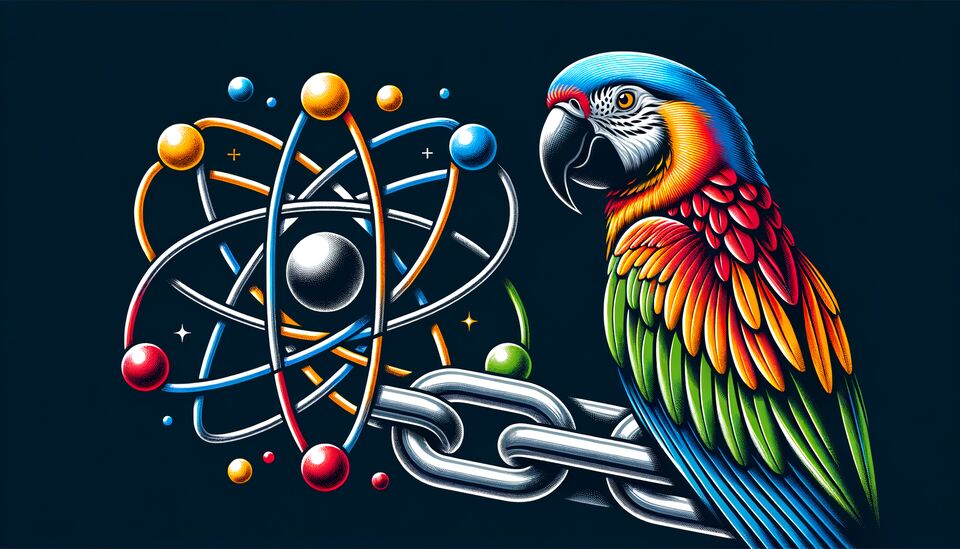

Google
Vertex AI Gemini
Google asks you to approve this application, including the scope cloud-platform before it can call Gemini for you.

Your access token travels to the model provider. The provider, not this application, decides whether that token may call the model.
Google asks you to approve this application, including the scope cloud-platform before it can call Gemini for you.